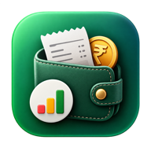

Expense TrackerPrivacy policy
Last updated 14 October 2026 · applies to the website, the Android app and the desktop apps.
Expense Tracker is an open-source personal finance app. It has no ads, does not sell or share your data, and uses it only to run the app for you.
What is stored, and where
- Your account — your email address and name from Google or email sign-in (Firebase Authentication).
- Your entries and settings — expenses, income, bills, budgets, goals, trips, debts and preferences, stored under your account in Google Cloud Firestore so they sync across your devices. Only you can read them; the database rules allow no one else.
- Your devices — a name like “Chrome on macOS”, when it was last open and whether it is locked, so you can see and sign out your devices.
- App lock — if you turn it on, a salted one-way hash of your PIN (never the PIN itself) and a log of security events such as repeated wrong PINs. Fingerprint and face unlock happen on your device; nothing biometric leaves it.
- Notifications — a push token per device and your upcoming reminders, so they can be delivered while the app is closed.
Google Drive backup
If you turn on Drive backup, the app saves copies of your data to a folder named “Expense Tracker backups” in your own Google Drive. It asks only for the drive.file permission, which lets it see the files it creates and nothing else in your Drive. The app talks to Drive directly from your device; no copy of your backups or your Google access is kept on any server of ours. You can delete the backups from Google Drive at any time.
Expense Tracker’s use of information received from Google APIs adheres to the Google API Services User Data Policy, including the Limited Use requirements.
Emails
If app lock is on, you may get an email at your account address about security events on your account (for example, repeated wrong PINs). There is no marketing email.
Services used
- Google Firebase (Authentication, Firestore, Cloud Messaging) — hosting your account and data.
- Exchange rates from public sources (jsDelivr / Cloudflare Pages and the European Central Bank via Frankfurter). These requests contain dates and currencies, never your data.
- GitHub Pages (the website) and GitHub Releases (app downloads).
Your choices
- Export everything as JSON or CSV at any time (Profile → Your data).
- Delete all your data, or your whole account, from Profile → Your data. Deletion from the database is immediate; backups in your Google Drive stay until you delete them.
- Sign out any device from Profile → Security.
Contact
Questions or requests: thrishankkuntimaddi@gmail.com. Source code: github.com/thrishankkuntimaddi/ExpenseTracker.